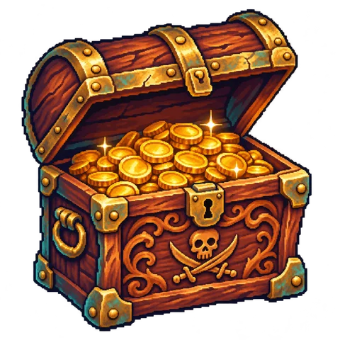
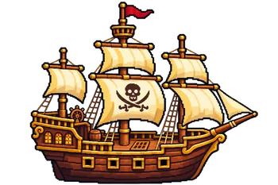
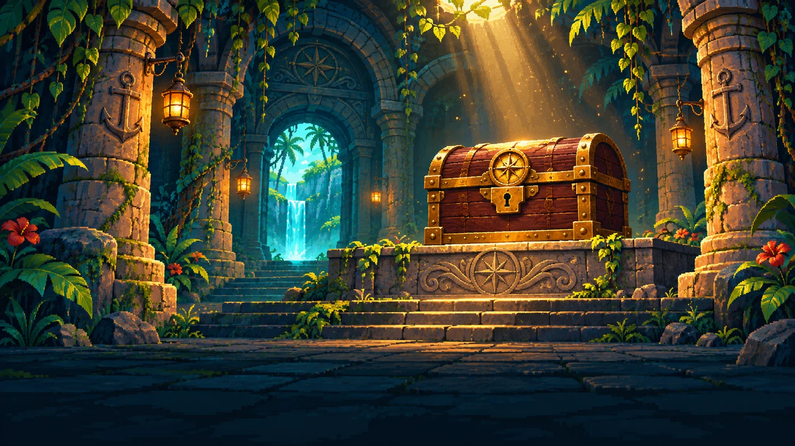
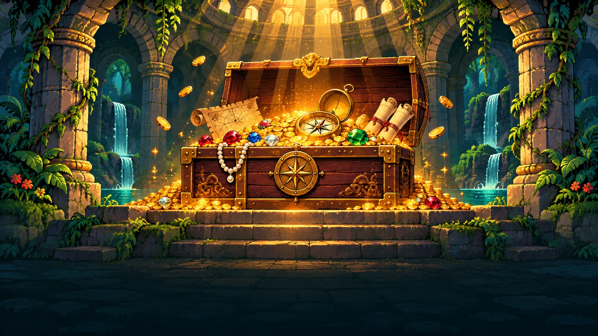
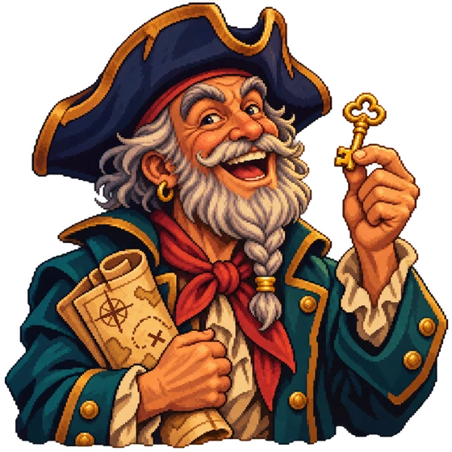

La tripulación se reúne

Guardado en este navegador
Elige el barco que va a jugar.
El reloj avisa cuándo volver al mapa.
Elige entre 6 y 40 casillas. Si acortas la ruta, los barcos que queden más allá de la meta llegan a la isla.
Puedes nombrar a la tripulación, al barco o a ambos.
Abre una partida guardada para continuar la expedición desde otro computador.
La historia de la mañana

Tienda del puerto
Los canjes del dado se activan después de lanzar: uno por tirada. Si alguien se equivoca, usa Deshacer en Opciones.



Compartan una mecánica que se llevan y cómo la usarían en su próxima clase.